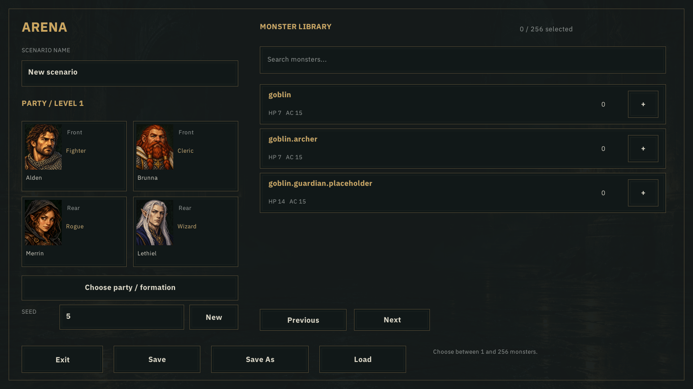
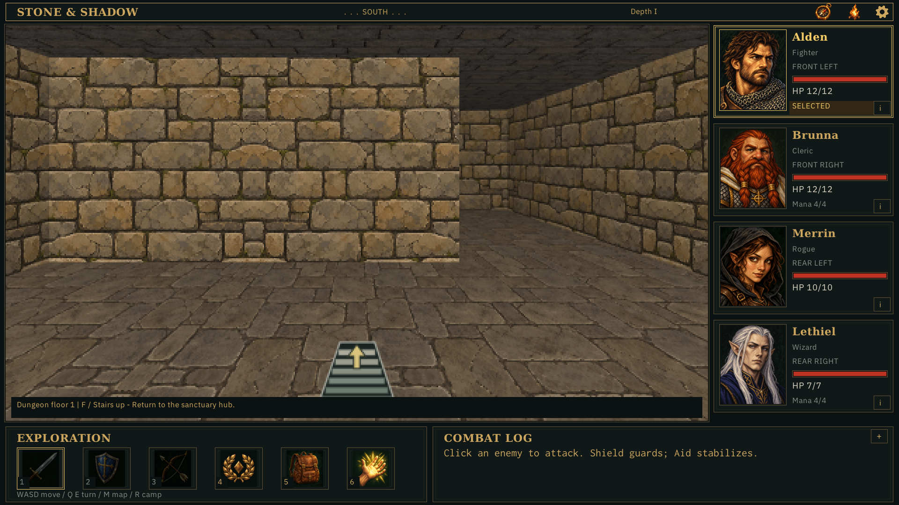
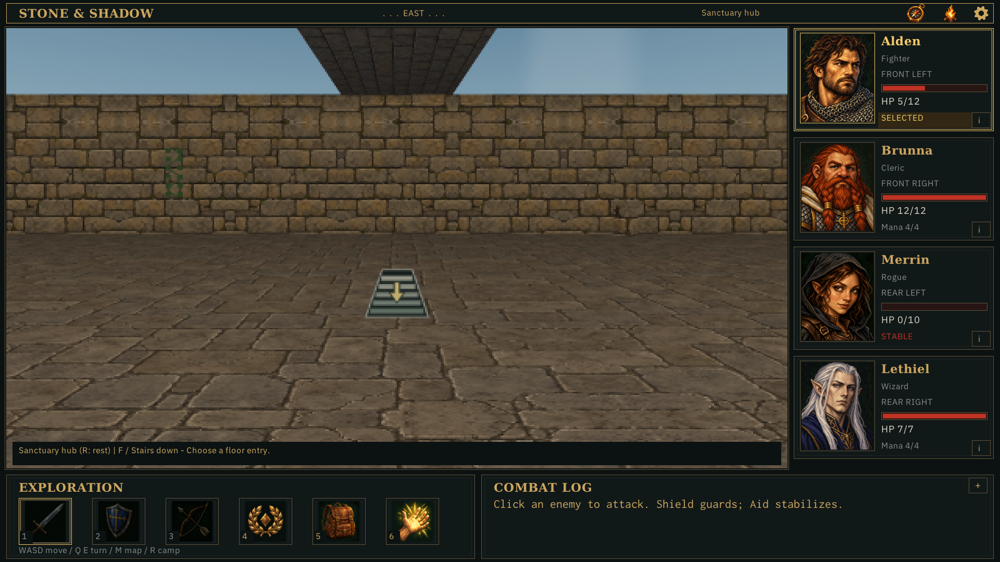
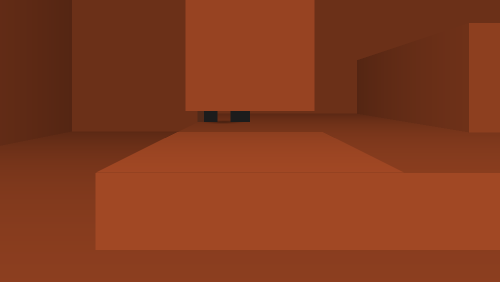
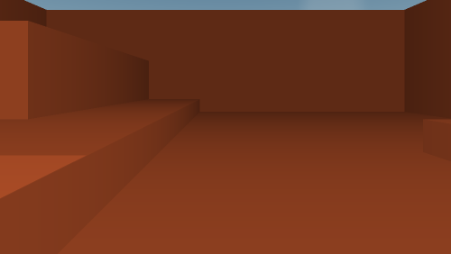
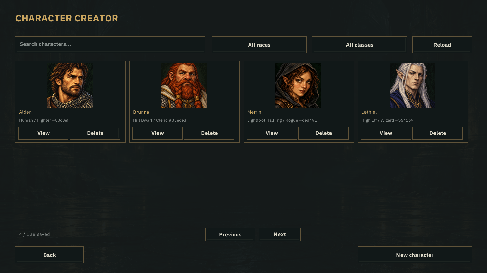

The regular game, arena and automation use one renderer. Old color rendering, banks, probe and standalone demos are deleted. These images use production menu callbacks and a fresh 1,070-operation campaign trace, plus clearly labelled test-owned height fixtures. No desktop input was injected.
Verification · Removal inventory · Campaign capture metadata · Door metadata
Closed, opening start, 150 ms and 300 ms boundaries from ordinary commands. Snapshot playback is slowed for inspection; source PNGs retain native resolution.
door-closed · door-begin · door-opening · door-open







